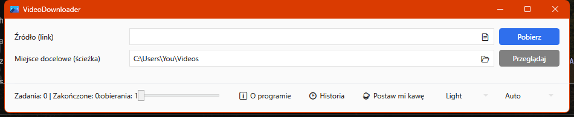
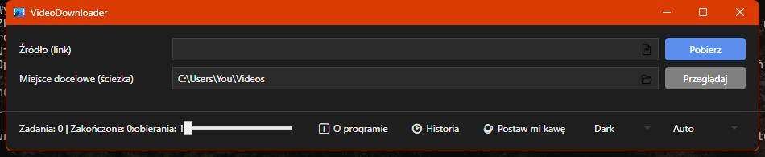

A small Windows app built around yt-dlp and FFmpeg. Paste one link or a whole list, choose the quality, and it downloads, merges, and remembers everything you've pulled down.
Requires Windows and the .NET 8 Desktop Runtime.
.txt file, and it queues every one of them.

Unzip it, run VideoDownloader.Wpf.exe, paste a link. No installer, no account, nothing phones home.